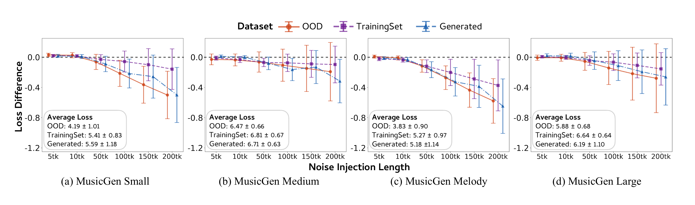
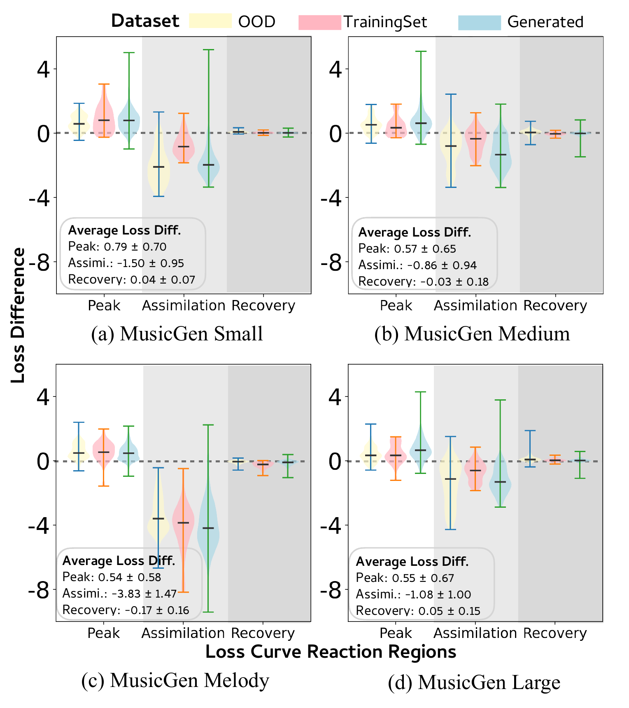

Figures from the Paper

Figure 1. Context Amnesia Effect revealed by the noise injection experiment.

Figure 2. Comparison of model performance under white noise across datasets and models.

Figure 3. Loss curve dynamics showing Peak, Assimilation, and Recovery regions.

Figure 4. Automated detection of three-stage behavior across datasets.

Figure 5. Shuffle order perturbation showing similar insensitivity to long-range disruptions.